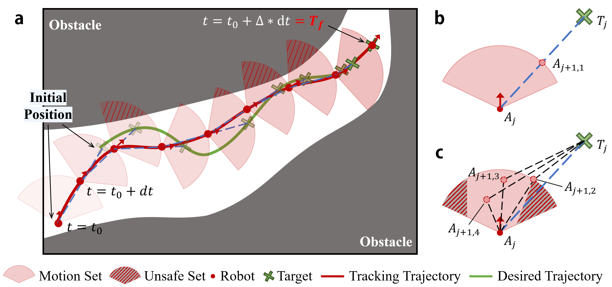

A TiSSaT-based controller is proposed for robotic systems to achieve spatio-temporal convergence. The controller is designed in the \(s\)-domain by global Lyapunov functions, where the constrained system in the \(t\)-domain is mapped to an unconstrained one in the \(s\)-domain by TiSSaT.
The range of prescribed time is imposed by multiple spatial constraints, which provides a priori guarantee for the feasible design of TiSSaT-based controllers, thereby ensuring the reliable execution of spatio-temporal tracking tasks under complex constraints.

The determination of prescribed time under full-state constraints and input saturation. a depicts the geometric analysis of prescribed time. b and c correspond to geometric relationships between the system and the target in two consecutive instants without and with trajectory constraints, respectively.
Motion Set:
\(
\Omega_{\rm motion}=\{x_1\in\mathbb{R}:-L_i \le x_i \le H_i,\ i=2,\cdots,n+1\}
\)
Safe Set:
\(
\Omega_{\rm safe}=\{x_1\in\mathbb{R}:-L_i \le x_i \le H_i,\ i=1,\cdots,n+1\}
\)
The motion set is determined by the motion constraints, such as the velocity and accelerate constraints, and the unsafe set is derived from the trajectory constraints like obstacle avoidance, prescribed performance, etc.
Additionally, the existence of uncertainties may affect the motion set, thereby reducing the scope of the safe set.

Tracking performances under 6 constrained scenarios. a lists constrained settings. b-g correspond to the states and control inputs of Scen. 1)-Scen. 6), respectively.
The proposed TiSSaT-based control protocol ensures the convergence of tracking error within a prescribed time, and the system can only track the desired trajectory when \(T_f>T_{f\min}\) is satisfied.
The range of prescribed time \(T_{f\min}\) is innovatively derived from geometric analysis under multiple constraints, which is closely correlated to full-state constraints, input saturation, and unknown uncertainties.

The convergence process and control input magnitude of different regulated factors. a lists comparison of maximum and average of control input magnitudes \(|u(t)|\) and auxiliary input magnitudes \(|\alpha_3(t)|\).
b-e correspond to the convergence of \(x_1(t)\), \(x_2(t)\), \(u=x_3(t)\), and \(\alpha_3(t)\), respectively.
In accordance with the form of the employed time-varying function, for a given time instant, as the regulated factor \(p\) increases, the value of \(\mu(t)\) decreases. Then, the control input magnitudes of the proposed TiSSaT-based controller are attenuated.
The effect of regulated factor \(p\) of the time-varying function \(\mu(t)=1/(T_f-t)^p\) on the convergence rate and the control input magnitude is consistent with the conclusion in our previous work Zhao et al. (2025).
This indicates that the TiSSaT-based solution in the infinite \(s\)-domain is identical to the original system's solution on a given finite \(t\)-domain. An appropriately reduced control input magnitude diminishes the switching frequency of control direction, thereby allowing the convergence of tracking errors more rapidly.

Tracking performance comparison with prescribed-time output-constrained method [21] and PT-PPC approach [22]. a lists simulation settings and comparison of [21], [22], and proposed TiSSaT-based control protocol.
b-c depict tracking errors and control inputs of different methods, respectively. d-f correspond to the comparisons of tracking performance with [21], [22]-C1, and [22]-C2, respectively.
Unlike existing methods, the proposed TiSSaT-based control protocol uniformly maps the constrained system in the \(t\)-domain to an unconstrained one in the \(s\)-domain.
Moreover, the derived range of prescribed time balances the relationship among the three factors. Together, they offer stronger adaptability and practical compliance.

Quadrotor-based flight test validation. A quadrotor equipped with an IMU, an autopilot, and an onboard computer is employed for trajectory tracking. The onboard computer is a Jetson Orin NX laptop and the autopilot is a CUAV V5+, which are responsible for high-level control algorithm computation and low-level flight execution, respectively.
A motion capture system is utilized to provide the position of quadrotor. The flight test process follows a three-stage workflow: takeoff, offboard-mode trajectory tracking, and landing.
Specifically, in the offboard mode, the proposed TiSSaT-based controller runs on the onboard computer, computes control commands, and transmits them to the autopilot.

Tracking performances of the quadrotor in three constrained flight tests with four trials per test. The constraints in FT. 1) and FT. 3) are set as \(L_{x,1}=H_{x,1}=\infty\), \(L_{y,1}=6\), \(H_{y,1}=-1\), \(L_{x,2}=H_{x,2}=L_{y,2}=H_{y,2}=1\), and \(L_{x,3}=H_{x,3}=L_{y,3}=H_{y,3}=20\), while the eased constraints in FT. 2) are \(L_{x,1}=H_{x,1}=\infty\), \(L_{y,1}=6.5\), \(H_{y,1}=-0.5\), \(L_{x,2}=H_{x,2}=L_{y,2}=H_{y,2}=1.8\), and \(L_{x,3}=H_{x,3}=L_{y,3}=H_{y,3}=25\).
According to the range of prescribed time, the prescribed times of FT. 2) and FT. 3) should satisfy \(T_f\geq T_{f\min}=13.45{\rm s}\) and \(T_f\geq T_{f\min}=44.40{\rm s}\), respectively. For the sake of comparison, the prescribed times of FT. 1), FT. 2), and FT. 3) are set as \(45{\rm s}\), \(14{\rm s}\), and \(45{\rm s}\), respectively.